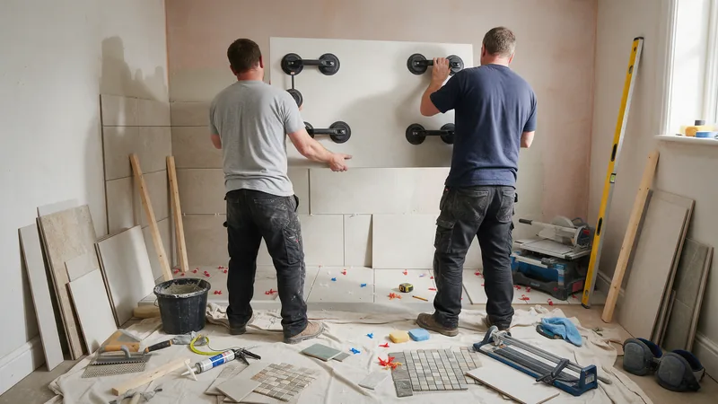
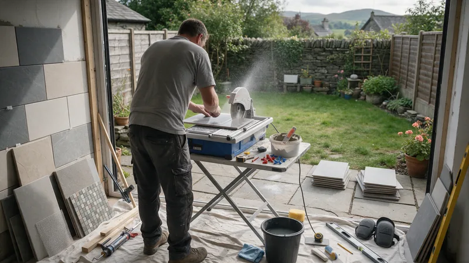

Home / Services / Large format and porcelain tiles
Large format and porcelain tiles
Large format and porcelain tiles.
Big thin porcelain, two pairs of hands and a suction frame. Fewer joints, a calmer looking room, and a job where nearly all the work happens before the first tile goes anywhere near the wall.
Why the quote is different
People see a bigger tile and expect it to be quicker, because there are fewer of them. It usually is not, and it is worth knowing why before you compare two quotes that look miles apart.
A large tile needs a flatter background, and getting a wall or a floor flat enough is real work with real materials. It needs two people to lift and place, every time, so a day on site costs two days of labour. It needs a bigger notched trowel and often back buttering as well, which means more adhesive. It needs levelling clips across every joint to stop one tile sitting proud of the next. It cannot be cut on a hand cutter, so it is a wet saw, outside, with water. And one broken tile is a bigger loss and often a longer wait.
Flat, and what that actually means
This is the part worth understanding, because it is where the money goes. Every wall in every house has high spots and hollows in it. A small tile only spans a few inches, so it can sit down into a hollow and back up again and nobody will ever know. A tile a metre and a bit long cannot. It bridges from one high spot to the next, which leaves a void behind the middle of it and lifts one end proud of the tile next to it.
That step between two tiles is called a lip, and you feel it with your hand long before you see it. On a floor it is worse again, because you feel it through your feet and it catches a mop. The only cure is a flat background, and that is why a straightedge goes on the wall before we quote a large format job at all.
Porcelain, and what it is
Porcelain is fired harder and denser than ceramic, so it takes up almost no water, which is what makes it right for floors, wet areas and outside. The colour usually runs right through or close to it, so a chip is less obvious than on a glazed ceramic where a chip shows the pale body underneath.
The trade off is that it is harder to cut and harder to drill, and a cheap cut shows on a dense tile in a way it does not on a soft one. It also means a porcelain tile will happily outlive the wall it is stuck to, which is another reason the background is worth doing properly.

Generated photoGenerated for this demo. Not a photograph of a real job.
 Generated photo
Generated photoCombed out, then back buttered, then clips in. A full bed matters more the bigger the tile gets.
Flatness
Why a long tile is a different job.
The same wall in section twice, with only the size of the tile changed. A short tile can follow a hollow. A long one bridges it, and every millimetre the wall is out turns into a step you can feel with your hand.
Drawn in the browser rather than photographed. The hollow is exaggerated, but only a bit.
On the job
How this one usually goes.
- Straightedge on everythingBefore anything is quoted. Where the high spots and the hollows are decides whether the wall needs skimming or levelling, and that is a line on the quote rather than a surprise.
- Agree the tile and the jointSize, finish, whether it can be mitred at an external corner, and how wide the joints are going to be. A big tile with a hairline joint leaves no room to adjust, which is a decision rather than a default.
- Make it flatSkim, level or board as needed, then prime. The least interesting part of the job and the one the finish depends on entirely.
- Set out, with full tiles in mindWith a large tile the cuts are big and obvious, so where they land matters more than ever. Centre lines struck and the whole wall or floor planned out before a tile moves.
- Fix, two upComb out, back butter, lift with the suction frame, place, bed it in and get the levelling clips across every joint while it is still movable.
- Cut wet, outsideEverything on the wet saw, outside wherever the weather lets us. Slurry rather than dust, and a cut edge clean enough to sit next to another one.
- Clips off, grout, sealClips knocked off once it has gone off, joints grouted, every internal corner and movement joint sealed with a flexible bead.
A sample running order for this demo. Yours depends on the property and on what turns up when the old surface comes off.
Questions
Asked about this job.
How big is large format?
In the trade it tends to mean anything with a side over about six hundred millimetres, and the common sizes people actually ask for are six hundred by twelve hundred, and the very big thin panels beyond that.
Each step up changes the job rather than just the price per tile. At six hundred by twelve hundred it is two people and a suction frame. At the really big panels it is specialist handling and a different conversation, and we would tell you honestly if a job was past what we take on.
Will there be lipping?
Not if the background is flat and the clips go on, which is the whole reason both of those are in the quote. What nobody can do is put a long flat tile onto a wall that is out and have it come out flat anyway.
If a wall needs levelling and you would rather not pay for that, the honest option is a smaller tile, not a big one fitted hopefully. We will say that rather than take the job and leave you with a wall you run your hand down.
Can you do a large format floor over underfloor heating?
Yes, and a big porcelain tile over heating is a good combination, because porcelain conducts heat well and does not mind the cycling.
What it needs is a flexible adhesive, a full solid bed under every tile so there are no air pockets over a cable, and a decoupling membrane underneath. There is a drawing of the whole build up on the natural stone page.
What size joint do big tiles need?
A joint is not just a look, it is where the tolerance lives. A big tile is not perfectly flat or perfectly square, and a wider joint gives somewhere for that to go. Two to three millimetres is usually sensible on a large format wall and a bit more on a floor.
People often want a hairline joint because it looks sharp in a photograph. On a big tile that leaves no room to adjust anything, and any lipping shows up much harder. We will tell you what we think the tile will take.
Can the external corners be mitred?
On a lot of porcelain, yes, and a mitred corner looks far better than a trim if the tile and the budget allow it. It is slow work on a wet saw and the cut edge has to be perfect, because on a mitre there is nowhere to hide.
Not every tile will take it. Something with a thin decorative glaze over a contrasting body can chip along the arris and look worse than a neat trim. Send us the tile details and we will say which we would do.
General trade knowledge written for this demo, not advice on your property.
Our work
Sample jobs like this.
Generated photoCombed out, clips inUlverston · Sample Generated photoCuts following the unitsKendal · Sample
Generated photoCuts following the unitsKendal · Sample
Generated photoCutting wet, out the backWindermere · SampleMade up samples with generated pictures. Tap one for the detail.
Also
The other things we do.
Bathroom wall and floor tiling
Walls and floors, set out from the middle so the cuts land where nobody looks, and waterproofed behind the tile rather than relying on the grout to do it.
More →Kitchen splashbacks
The strip of wall between the worktop and the units, which is small, awkward, full of sockets and the one bit of tiling people stand two feet away from every day.
More →Natural stone tiling
Slate, limestone, travertine and marble. Heavier, thirstier and more variable than porcelain, so it wants sealing, sorting and a floor that can carry it.
More →Regrouting and resealing
Old grout raked out and replaced, the internal corners taken back to bare and resealed. The cheapest job on this list and often the only one a bathroom needs.
More →Outdoor porcelain tiling
Patios and paths in outdoor grade porcelain, on a full mortar bed with a fall away from the house, because outside it is the water and the frost that decide how long it lasts.
More →Shall somebody come and look at it?
Tell us the room and your postcode. Twenty minutes with a straightedge tells us more than any photograph.